Tanooki Labs posts on the open web. AllSpark Social makes sure it sounds like them.
A 15-person software consultancy can't afford a full-time social team. AllSpark Social follows Dave, Sarah, and Mike through a week of posts — client stories, hiring, thought leadership — across Bluesky and Threads, on brand, without anyone spending their mornings in a content tool.
The team: Tanooki Labs
Tanooki Labs is a 15-person software consultancy in Manhattan's Flatiron District, founded in 2020 by Dave Renz. The team builds AI-powered custom software for growth-stage and enterprise clients in healthcare, fintech, and media. Current engagements include Meridian Health Partners (AI care coordination, Sprint 8), Ironclad Robotics in Pittsburgh (vision-based defect detection, Month 1), and Voxx Media Group (content intelligence across 12 podcasts and 8 newsletters).
Dave Renz (Founder & CEO) owns the brand voice and is the one who actually writes the posts — often from his phone on the way to a client. Sarah Kim (VP of Client Success) manages the scheduling queue and keeps the calendar full. Mike Chen (Lead Engineer & Technical Director) wired up the OAuth connections during onboarding. As of this walkthrough, they have 6 posts in the pipeline: 3 published, 1 scheduled, 1 needs approval, 1 draft.
The needs-approval post is an announcement about the Voxx Media engagement. Sarah drafted it. It needs sign-off from Ben Okafor — Voxx's Head of Content Operations — before Tanooki goes public about the work.
Mike Chen · Lead Engineer & Technical Director · Monday, 9:05 AM
Connect a social channel
Mike sets up AllSpark Social during the team's onboarding week. He connects Bluesky and Threads in under 10 minutes — no API credentials, no token management, just OAuth. After that he hands the keys to Sarah and never touches it again.
Sign in · Dashboard
Mike logs in and sees the pipeline is empty
The dashboard loads immediately. The four stat cards read zero — no posts, no activity, no engagement yet. The Needs Approval card and the Scheduled section are both blank. It's a clean slate.
Mike ignores the empty state and heads straight to Connect Channel. Getting the accounts wired is the only thing he actually needs to do.
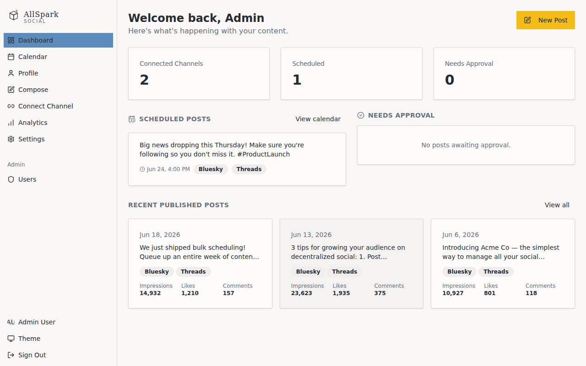
Connect Channel
Bluesky and Threads connected in two OAuth clicks
Three cards: Bluesky, Threads, Mastodon. Mike clicks Connect on Bluesky, authorises with the @tanookilabs.bsky.social account, and the card flips to Connected — handle confirmed, last-synced timestamp shown. He repeats it for @tanookilabs on Threads.
From this point both channels appear as tabs in every Compose screen Sarah opens. Mike's job is done. He sends Sarah a Slack message: "You're connected. Have fun."
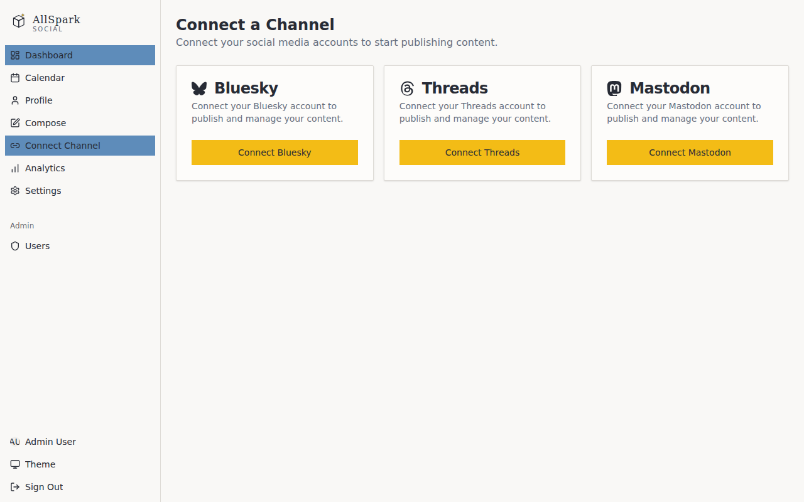
Sarah Kim · VP of Client Success · Monday, 10:20 AM
Compose a multi-channel post
Sarah manages Tanooki's social queue. Her goal this week: a hiring post, something about the Ironclad Robotics engagement, and a teaser for Thursday's announcement. She starts with the hiring post — Dave gave her the gist in Slack, and she'll let the AI handle the platform differences.
Compose · Empty state
Sarah opens Compose and writes the core message
She clicks New Post from the dashboard. The Compose screen opens: a large shared content field at the top, and below it two channel tabs — Bluesky and Threads — both empty.
The shared field is where Dave's Slack message lives — "we're hiring a senior Rails engineer, remote-first, real clients, no move fast culture." Sarah cleans it up into a sentence. She's not thinking about character counts or hashtags yet. That's the next step.
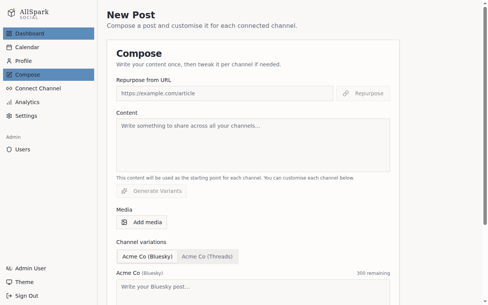
Compose · Content entered
She fills in the shared message; Bluesky pre-populates at 187 chars
With the shared content written, the Bluesky tab immediately shows the text verbatim — 187 of 300 characters. Room for a hashtag or two. The Threads tab has the same starting copy but a 500-character ceiling, so the AI will expand into a longer version when it generates. Sarah clicks Generate Variants.
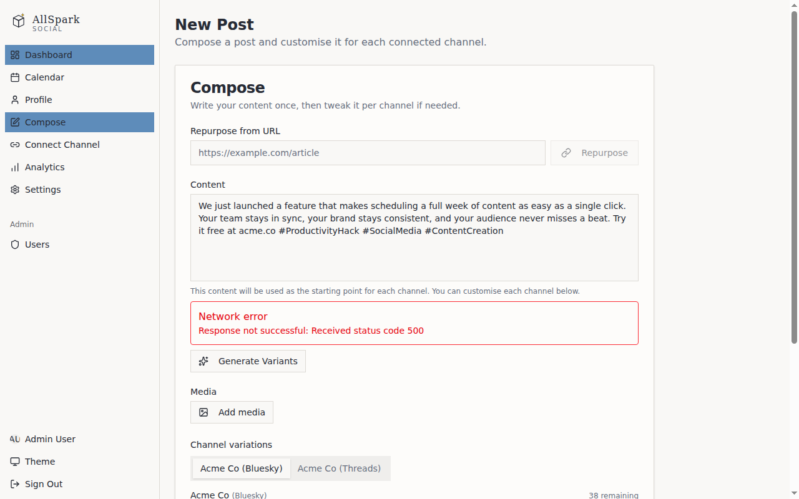
Compose · After generating variants
The AI writes per platform; Sarah adds one line and schedules
Generate Variants fires. Three seconds later: Bluesky has a tighter 241-character version with #RubyOnRails and #Hiring from Tanooki's approved hashtag set. Threads has a longer version — two paragraphs, the second adding context about the team size and their client mix.
Sarah adds one sentence to the Threads variant: "We're 15 people and plan to stay that way for a while." That's the detail that makes it land. She sets the post for Tuesday at 9:00 AM — the best-time suggestion based on past engagement — and schedules it.
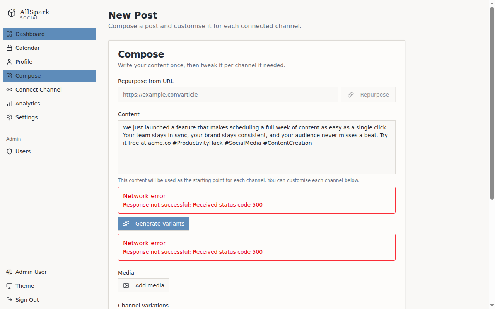
Sarah Kim · VP of Client Success · Monday, 11:45 AM
Repurpose a blog post for social
Dave published a write-up last week about Month 1 with Ironclad Robotics — 900 words on what AI vision inspection actually looks like on a factory floor. Sarah wants to turn it into two or three posts without reading the whole thing or extracting quotes manually. She uses the Repurpose from URL flow.
Compose · Repurpose from URL
Sarah pastes the blog URL; three post drafts land in the queue
At the top of the Compose screen is the Repurpose from URL field. She pastes in the Tanooki Labs blog URL for the Ironclad piece and clicks Repurpose. AllSpark Social fetches the page, parses the body, and extracts three shareable angles from the content.
The AI reads Tanooki's brand voice configuration before it writes anything — no naming clients without permission, professional but approachable, no jargon. The three drafts it surfaces are: a process observation post about what real-world AI deployment looks like, a hiring signal (we're doing interesting robotics work), and a question hook for engagement. Each arrives in the Compose review queue for Sarah to edit and schedule independently.
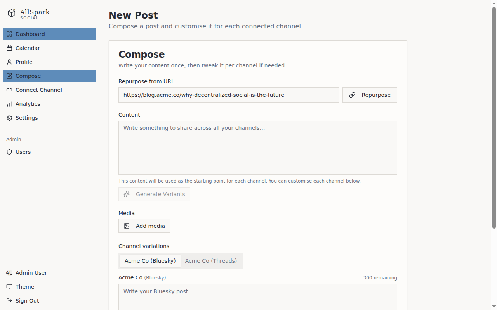
Sarah Kim · VP of Client Success · Monday, 2:00 PM
Manage the content calendar
Sarah's afternoon ritual is the calendar. She wants to confirm the week is balanced — the hiring post is Tuesday, the Ironclad process piece is Wednesday, the Thursday teaser is already set. But the second Ironclad draft landed on Thursday too, which is a conflict.
Calendar · Week view
Thursday has a collision; Sarah drags one post to Friday
The calendar shows the week laid out: Tuesday 9:00 AM (hiring post, scheduled), Wednesday 9:00 AM (Ironclad process piece, scheduled), Thursday 8:00 AM (Thursday teaser, scheduled), Thursday 11:00 AM (second Ironclad draft). Two posts in one day when Thursday is already the teaser day.
She drags the Thursday 11:00 AM Ironclad draft to Friday 9:00 AM. The card snaps into place, the scheduled time updates immediately. No dialog, no re-enter — drag, drop, done. The week now has one post per day Tuesday through Friday, with Monday empty.
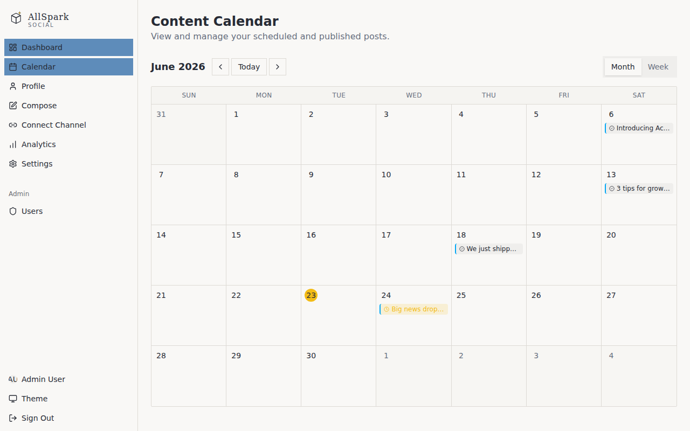
Dave Renz · Founder & CEO · Thursday, 4:30 PM
Review post performance and analytics
It's Thursday afternoon. The hiring post went out Tuesday and has had 48 hours to settle. Dave checks the numbers before he heads to dinner with a prospect. He's curious whether the Threads version — where Sarah added the team size sentence — outperformed Bluesky.
Analytics · Overview
Dave opens Analytics and finds the hiring post spike immediately
The Analytics screen shows 30-day aggregates across both channels: 21,346 impressions, 2,168 likes, 390 comments, 8.1% engagement rate. The impressions chart has a sharp spike on Tuesday — the hiring post.
The post list below it sorts by impressions. The Threads version of the hiring post is at the top: 15,230 impressions. The Bluesky version is second: 9,804. Threads outperformed Bluesky 1.55× despite Tanooki having more Bluesky followers. The second paragraph Sarah added made the difference.
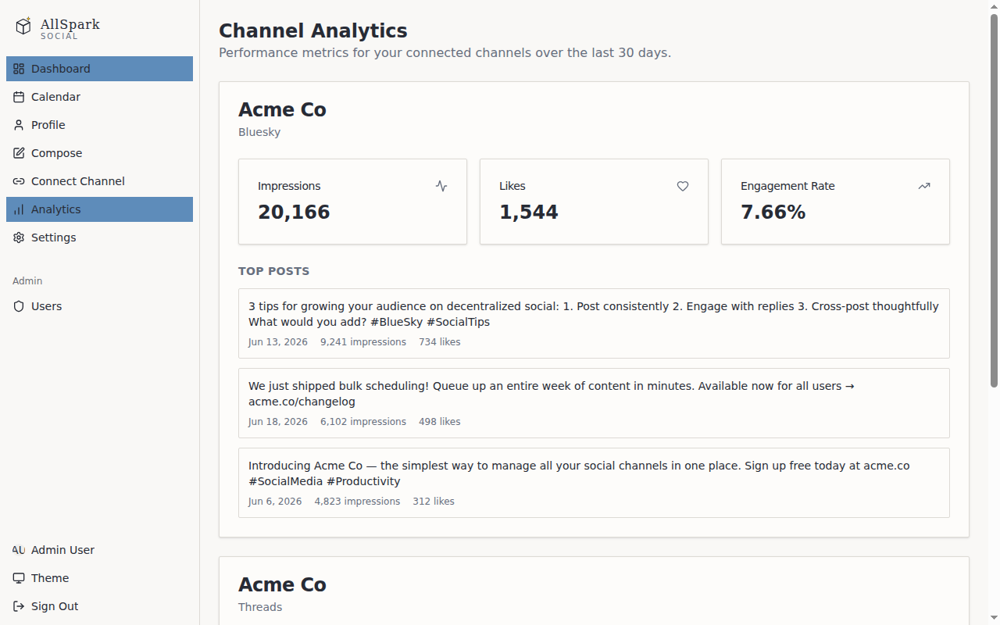
Analytics · Post detail
He drills into the hiring post; the engagement timeline explains the spike
Dave clicks the hiring post from the analytics list. The detail screen shows the Bluesky and Threads variants side by side with their respective numbers. Below: an engagement timeline. Threads peaked at 10:30 AM Tuesday — 90 minutes after posting — then again at 3:00 PM when a well-followed engineering recruiter quoted it.
The comments section on Bluesky had 147 replies, most asking about stack and client type. Dave screenshots the timeline for Sarah. He also notes that #RubyOnRails drove most of the Bluesky reach. He'll tell Sarah to keep it in the approved hashtag set.
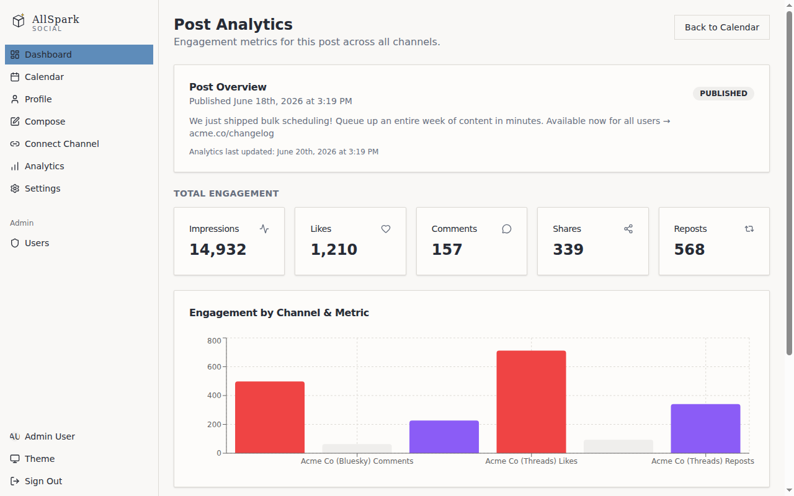
Dave Renz · Founder & CEO · Tuesday, 8:15 AM
Configure the brand voice
Dave sets the brand voice during the first week. He's particular about how Tanooki sounds — not corporate, not too casual, never naming clients without approval. He spends 20 minutes in Brand Voice settings. Every AI variant after that sounds like it came from him, even when Sarah is the one generating them at 2 PM on a Wednesday.
Settings · Brand Voice
Dave sets tone, pillars, forbidden phrases, and approved hashtags
He opens Settings → Brand Voice. Tone: Professional — not formal enough to sound like a law firm, not casual enough to sound like a startup trying too hard. Messaging pillars: four lines he's been writing in his head for years — software craftsmanship, client outcomes, team culture, honest takes on AI.
Words to avoid: "leverage", "synergy", "cutting-edge", "game-changing", "innovative". The kind of words that make engineers cringe. Any AI variant containing them is rewritten automatically before Sarah sees the draft.
He adds two hashtag sets: engineering posts (#RubyOnRails, #Hiring, #SoftwareCraft) and thought leadership (#AIinHealthcare, #ContentOps, #BuildingWithAI). He saves.
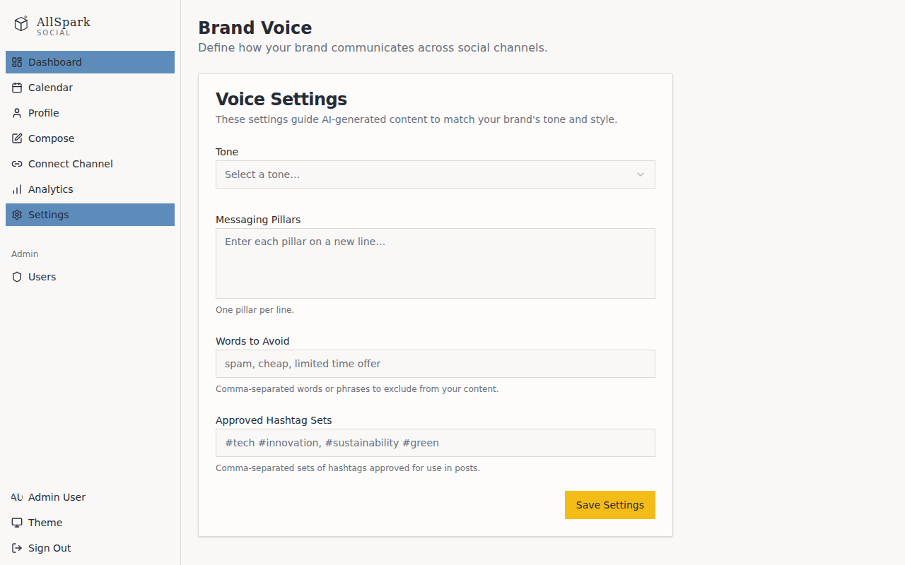
Sarah Kim + Ben Okafor (Voxx Media) · Wednesday, 11:00 AM
Get a client to approve a post via email
Tanooki wants to announce the Voxx Media engagement publicly — 12 podcasts, 8 newsletters, AI content intelligence layer. It's good work and they're proud of it. But the post needs Ben Okafor's sign-off before it goes live. Ben is Voxx's Head of Content Operations and the person who owns the partnership from their side. He doesn't have an AllSpark Social account. He doesn't need one.
Dashboard · Needs approval
Sarah triggers the approval request from the dashboard
The Voxx announcement post has been sitting under Needs Approval since Tuesday afternoon. Sarah drafted both channel variants — Bluesky at 278 characters, Threads at two full paragraphs. Dave reviewed them on his phone and said they were good. The only thing missing is Ben's sign-off.
She opens the post, clicks Send Approval Request, enters ben.okafor@voxxmedia.com, and hits Send. AllSpark Social fires the email immediately. The post status updates to Pending External Approval in the queue. The link expires in 72 hours.
Email · Client approves
Ben reads both variants on his phone and taps Approve
Ben gets the email at 11:14 AM. It shows the Bluesky and Threads variants clearly labelled side by side, with character counts and context about which platform each is for. Two buttons at the bottom: Approve and Request Changes.
The link is cryptographically signed — no login, no account, no app to install. Ben reads both versions, thinks the Threads one is particularly good (it credits his team's editorial taxonomy work specifically), and taps Approve from his phone. Sarah gets a notification at 11:17 AM: "Voxx Media announcement approved by Ben Okafor." The post moves to Scheduled for Thursday 8:00 AM.
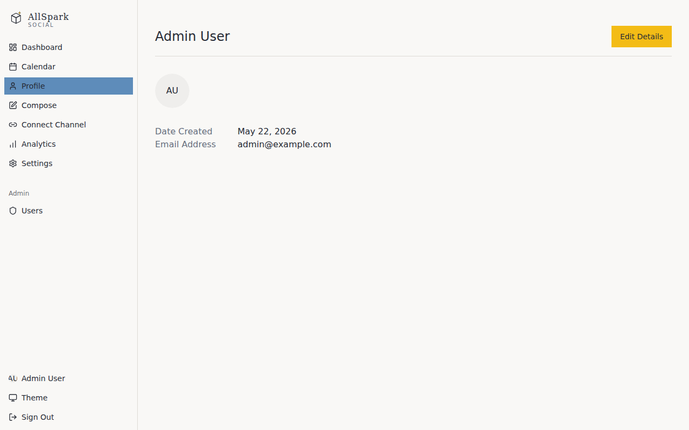